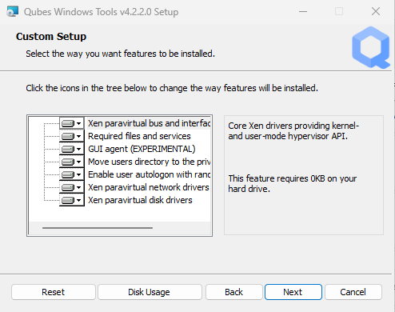
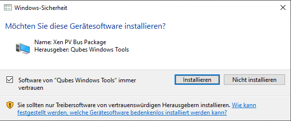
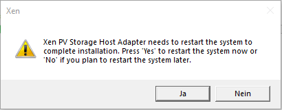
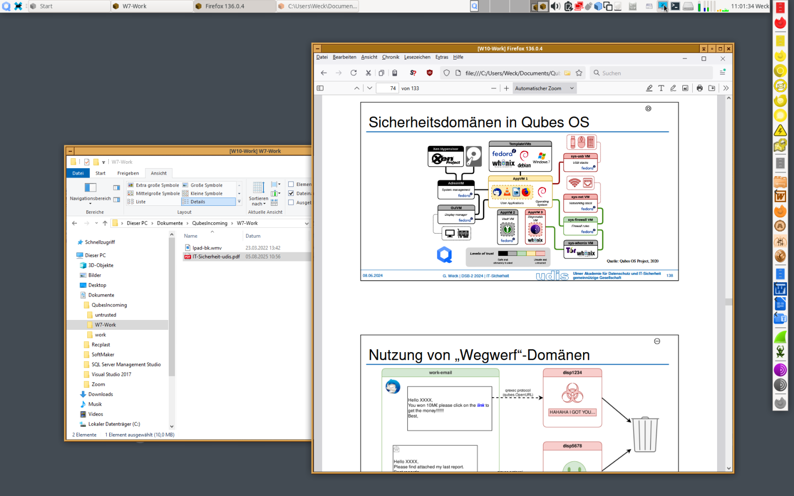
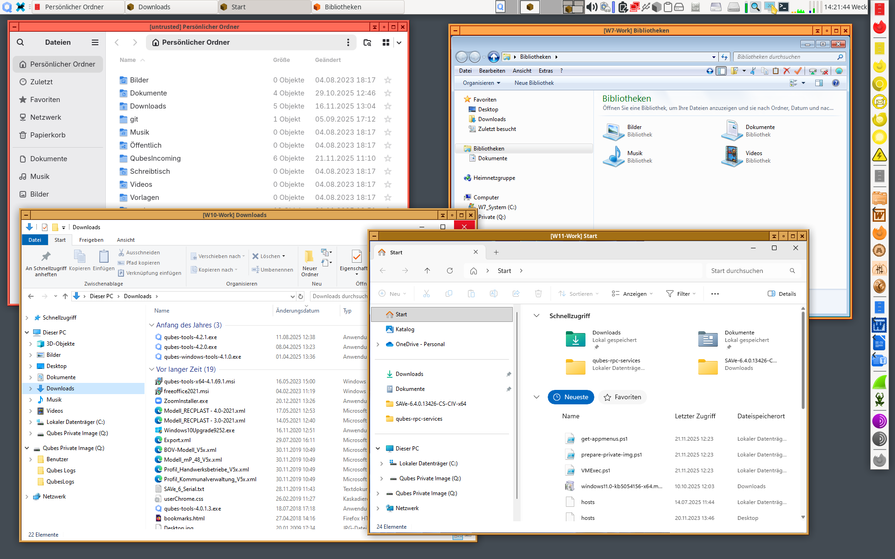
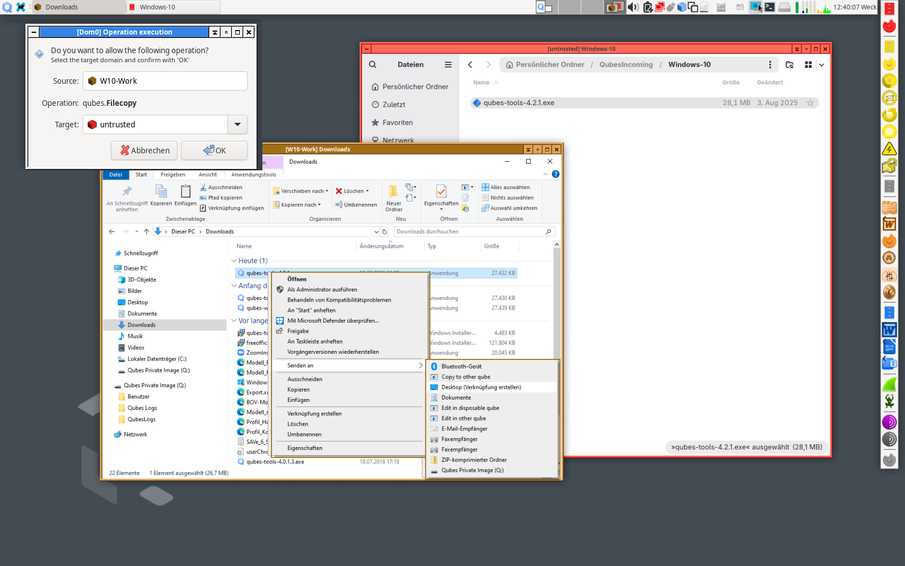
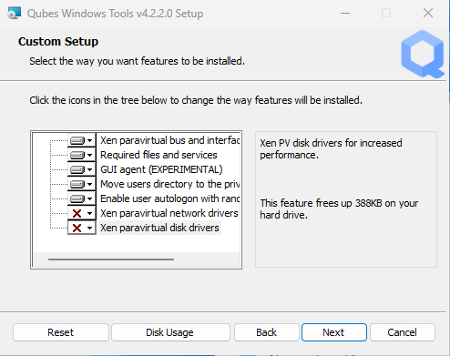

Qubes Windows Tools (QWT)
備註
As there is no officially supported version of Qubes Windows Tools for Windows 7, the following instructions describe a workaround to obtain QWT functionality using an older version of QWT for Windows 7. For Windows 10 and 11, the latest official version of QWT must be used.
Qubes Windows Tools (QWT) are a set of programs and drivers that provide integration of Windows 7, 10, and 11 Standalone, TemplateVMs, and AppVMs with the rest of the Qubes system. They contain several components that can be enabled or disabled during installation and rely on specific functions of Qubes, which support this integration:
Shared components (required) - common libraries used by QWT components
Qubes GUI Agent - video driver and GUI agent that enable the seamless GUI mode that integrates Windows apps onto the common Qubes trusted desktop (currently only for Windows 7 and, in a preliminary experimental version, for Windows 10 and 11).
Configure autologon - To start a Windows qube without a prompt for user name and password, autologon is defined, using a random hidden password which cannot be extracted from the registry.
Disable UAC - User Account Control may interfere with QWT and doesn't really provide any additional benefits in the Qubes environment
Clipboard sender/receiver - Support for secure clipboard copy/paste between the Windows VM and other AppVMs
File sender/receiver - Support for secure file exchange between the Windows VM and other AppVMs
Xen PV drivers - drivers for the virtual hardware exposed by Xen for Windows that increase performance compared to QEMU emulated devices and are required for attaching USB devices
Base Xen PV Drivers (required): paravirtual bus and interface drivers
Xen PV Disk Drivers: paravirtual storage drivers
Xen PV Network Drivers: paravirtual network drivers
Move user profiles: user profile directory (
C:\users) is moved to VM’s private disk backed byprivate.img fileindom0(useful mainly for HVM templates).
Qubes Core Agent (part of Qubes) - Needed for proper integration with Qubes as well as for
qvm-runand genericqrexecfor the Windows VM (e.g., ability to run custom service within/from the Windows VM)Copy/Edit in Disposable VM (part of Qubes) - Support for editing files in DisposableVMs
Audio - Audio support is available even without QWT installation if
qvm-features audio-modelis set asich6
注意
Due to the security problems described in QSB-091, installation of Qubes Windows Tools is currently blocked in Qubes R4.2. Instead, a text file containing a warning is displayed. Currently, it is difficult to estimate the severity of the risks posed by the sources of the Xen drivers used in QWT possibly being compromised, so it was decided not to offer direct QWT installation until this problem could be treated properly. While Windows qubes are, in Qubes, generally not regarded as being very trustworthy, a possible compromise of the Xen drivers used in Qubes Windows Tools might create a risk for Xen or dom0 and thus be dangerous for Qubes itself. This risk may be small or even non-existent, as stated in QSB-091. If you understand this risk and are willing to take it, you can still install the previous version of Qubes Windows Tools for Windows 7, which will work for Windows 7, but not for Windows 10 or 11.
For Windows 10 or 11, currently, there is no official, final QWT version available for Qubes R4.2, but for Qubes R4.3, an official version has been developed and can also be used in Qubes R4.2. This version is not subject to the security problems stated above, but it should be noted that its graphics agent is still regarded as experimental and so may show some errors. The new Qubes graphics driver used there is not yet fully compatible with Windows and may cause weird effects. So, in Windows 11 25H2, it will cause all windows to be displayed twice; this can be, at least partially, remedied by moving the second instance to another workspace. Furthermore, trying to display the Windows menu via the keyboard button may result in a tiny, unusable menu. If the driver is installed, despite these risks, and is working at least partially, switching to seamless mode and staying there will probably work quite satisfactorily, but switching to and from non-seamless mode may cause trouble, as well as changing the screen resolution will do there. So, usage of the new Qubes graphics driver should be avoided unless a casual reboot of the Windows VM is acceptable, even if it is partially working. Using the Qubes graphics driver will not provide seamless mode unless the qvm-features parameter gui is set to 1. To disable the graphics driver, the parameter gui has to be set to an empty string, while the parameter gui-emulated has to be set to 1.
Note: If you choose to move profiles, drive letter Q: must be assigned to the secondary (private) disk.
Note: Xen PV disk drivers are not installed by default. This is because they seem to cause problems (BSOD = Blue Screen Of Death). We're working with upstream devs to fix this. However, the BSOD seems to only occur after the first boot, and everything works fine after that. Enable the drivers at your own risk, of course, but we welcome reports of success/failure in any case (backup your VM first!). With disk PV drivers absent, qvm-block will not work for the VM, but you can still use standard Qubes inter-VM file copying mechanisms. On the other hand, the Xen PV drivers allow USB device access even without QWT installation if qvm-features stubdom-qrexec is set as 1.
Below is a breakdown of the feature availability depending on the Windows version (only x64):
Feature |
Windows 7 |
Windows 10 |
Windows 11 |
|---|---|---|---|
Qubes Video Driver |
y |
(y) |
(y) |
Qubes Network Setup |
y |
y |
y |
Private Volume Setup (move profiles) |
y |
y |
y |
File sender/receiver |
y |
y |
y |
Disable UAC |
y |
n |
n |
Configure autologon |
n |
y |
y |
Clipboard Copy/Paste |
y |
y |
y |
Application shortcuts |
y |
y |
y |
Copy/Edit in Disposable VM |
y |
y |
y |
Block device |
y |
y |
y |
USB 裝置 |
y |
y |
y |
Audio |
y |
y |
y |
Qubes Windows Tools are open source and are distributed under a GPL license.
Notes:
Currently, only 64-bit versions of Windows 7, 10, and 11 are supported by Qubes Windows Tools. Only the emulated SVGA GPU is supported (although there have been reports on working GPU passthrough).
This page documents the process of installing Qubes Windows Tools in versions R4.2 and R4.3.
In testing VMs only it's probably a good idea to install a VNC server before installing QWT. If something goes very wrong with the Qubes GUI agent, a VNC server should still allow access to the OS.
As several of the installation steps described below may cause errors, the Windows VM where Qubes Windows Tools are installed should be cloned before starting the installation.
Installing Windows OS as a Qubes VM
Please refer to this page for instructions on how to install Windows in a Qubes VM.
Preparation
Before proceeding with the installation, we need to disable the Windows mechanism that allows only signed drivers to be installed, because currently, the drivers provided as part of the Windows Tools are not digitally signed with a publicly recognizable certificate. To do that:
Start the command prompt as Administrator, i.e., right-click on the Command Prompt icon (All Programs -> Accessories) and choose "Run as administrator".
In the command prompt, type
bcdedit /set testsigning onReboot your Windows VM
Maybe in the future, this step will not be necessary anymore, because we will sign our drivers with a publicly verifiable certificate. However, it should be noted that even given the fact that those drivers are not digitally signed, this doesn't affect the security of the Windows VM in any way. This is because the actual installation iso file can be verified as described in step 3 below. The only downside of those drivers not being signed is the inconvenience to the user that he or she must disable the signature enforcement policy before installing the tools.
QWT relies on PowerShell scripts. If the execution policy defined for PowerShell is set to Restricted, execution of these scripts is blocked. Before QWT installation, this should be checked using the PowerShell command
PS C:\> Get-ExecutionPolicy
If script execution is blocked, it must be allowed using the following PowerShell command with administrator privileges:
PS C:\> Set-ExecutionPolicy Unrestricted
Warning: It is encouraged to enable autologon for any Windows HVMs that will have Qubes Tools installed in order to avoid possible problems with the Windows logon process, especially if the Ctrl-Alt-Del requirement is enabled there. To do so, in Windows 7, run the netplwiz command from the Win-R "execute" prompt, and uncheck the Users must enter a user name and password to use this computer option. In Windows 10 and 11, autologon can be configured later on during Qubes Windows Tools installation.
Warning: It is recommended to increase the default value of the Windows VM’s qrexec_timeout property from 60 (seconds) to, for example, 300. During one of the first reboots after Windows Tools installation, Windows user profiles are moved onto the private VM’s virtual disk (private.img), and this operation can take some time. Moving profiles and, later on, updating a Windows installation, is performed in an early boot phase when qrexec is not yet running, so a timeout may occur with the default value. To change the property use this command in dom0: (where <VMname> is the name of your Windows VM)
[user@dom0 ~]$ qvm-prefs <VMNAME> qrexec_timeout 7200
To enable file copy operations to a Windows VM, the default_user property of this VM should be set to the <USERNAME> that you use to log in to the Windows VM. This can be done via the following command on a dom0 terminal (where <VMNAME> is the name of your Windows VM):
[user@dom0 ~]$ qvm-prefs <VMNAME> default_user <USERNAME>
Warning: If this property is not set or set to a wrong value, files copied to this VM are stored in the folder C:\Windows\System32\config\systemprofile\Documents\QubesIncoming{<source_VM>}. If the target VM is an AppVM, this has the consequence that the files are stored in the corresponding TemplateVM and so are lost on AppVM shutdown.
For Windows 10 and 11: From the Windows command line, disable hibernation in order to avoid an incomplete Windows shutdown, which may lead to corruption of the VM's disk.
Start the command prompt as Administrator, i.e., right-click on the Command Prompt icon and select Run as administrator
In the command prompt, type
powercfg -H offReboot your Windows VM
Additionally, these versions of Windows will not display the CD-ROM drive after starting the qube with
[user@dom0 ~]$ qvm-start <VMNAME> --cdrom ...
or
[user@dom0 ~]$ qvm-start <VMNAME> --install-windows-tools
The solution is to disable hibernation in Windows with this command. (That command is included in QWT’s setup, but it’s necessary to run it manually in order to be able to open QWT’s setup ISO/CD-ROM in Windows).
Installing Qubes Windows Tools (QWT) in a Windows VM
Installing the Qubes Windows Tools on Windows 7, 10, and 11, both as a StandaloneVM as well as a Template VM and a corresponding AppVM, is described in the following sections.
Note: Seamless mode is currently only available in an experimental version for Windows 10 and 11. Please check the top of this document for the full feature availability breakdown.
備註
For Qubes R4.2, the new version of QWT is not included in the repositories, but it can be downloaded from the R4.3 repository (version 4.2.2-1 ), and it will work under R4.2, too.
First, make sure that
qubes-windows-toolsis installed in your system:For use with Windows 7, install the previous version of Qubes Windows Tools. The corresponding .rpm file for manual QWT installation for Windows 7is still available from the repositories for Qubes R4.2 (version 4.1.69-1 ).
After downloading, copy the file to dom0 as described in How to copy from dom0 and install it via
sudo dnf install PATH_TO_RPMFILE.For use with Windows 10 and 11, you have to install the new version 4.2.2 of Qubes Windows Tools. In Qubes R4.3, the QWT package is already part of the repositories. So, QWT can be installed directy, without downloading anything, via
[user@dom0 ~]$ sudo qubes-dom0-update qubes-windows-tools
Caution: Installing one of these QWT versions will remove the other if it is installed.
Warning: In Windows 7, the older version of Qubes Windows Tools will be replaced during the next
dom0update by the current dummy version 4.1.70-1. This can be inhibited by appending the lineexclude=qubes-windows-toolsto the file/etc/dnf/dnf.confindom0.This package makes the ISO with Qubes Windows Tools available, which is passed to the VM when
--install-windows-toolsis specified for theqvm-startcommand. Please note that none of this software ever runs indom0or any other part of the system except for the Windows AppVM in which it is to be installed. (It could not run indom0at all, becausedom0is a VM running under Fedora, while the QWT software is Windows software.)To install the Qubes Windows Tools in a Windows VM, one should start the VM passing the additional option
--install-windows-tools:[user@dom0 ~]$ qvm-start <VMNAME> --install-windows-tools
Once the Windows VM boots, a CDROM should appear in the ‘My Computer’ menu (typically as
D:orE:) with the setup program with the setup programqubes-tools-x64.msifor Windows 7 orqubes-tools-4.2.2.exefor Windows 10 and 11 in its main directory.Install Qubes Windows Tools by starting the setup program (logged in as administrator), optionally selecting the
Xen PV disk drivers.Caution: For Windows 7, the installation of the graphics driver in the first step will probably break the Windows qube, causing it to show only a black window and become unresponsive; the graphics driver has to be installed later on in a second step described below. For Windows 10 and 11, the Qubes graphics driver is still in experimental development. It may work or not, possibly depending on your hardware. So, in Windows 10 and 11, it may be less risky to install Qubes Windows Tools without selecting this driver, and later on, to try it in a clone of your Windows VM by re-running the installation in change mode.
Warning: The installation of the PV disk drivers may lead Windows to declare that the hardware has changed and that, in consequence, the activation is no longer valid, possibly complaining that the use of the software is no longer lawful. It should be possible to reactivate the software if a valid product key is provided.
For installation in a template, you should select
Move user profiles.
Several times, Windows security may ask for confirmation of driver installation. Driver installation has to be allowed; otherwise, the installation of Qubes Windows Tools will abort.

If during installation, the Xen driver requests a reboot, select “No” and let the installation continue - the system will be rebooted later.

After successful installation, the Windows VM must be shut down and started again, possibly a couple of times. On each shutdown, wait until the VM has really stopped, i.e., Qubes shows no more activity.
For Windows 7: If seamless mode is to be used, the Qubes graphics driver can now be installed, using a sequence of rather awkward operations:
Start the Windows 7 VM.
In the Windows device manager, you will probably find one or more unknown devices. Uninstall these devices.
Reboot the VM.
Now, using the appropriate Windows system management function, change the QWT installation, adding the Qubes graphics driver, but do not click on the “Finish” button to complete the installation.
In the device manager, you will find a new display called “Qubes Video Driver”. Deactivate this device.
Now, click on the “Finish” button to complete the QWT installation change.
Reboot the VM.
It may be necessary to start the GUI manually, by typing
qvm-start-gui VMNAMEin dom0.The device “Qubes Video Driver” may show up as deactivated. In this case, you can now activate it again.
Changing the screen resolution for this VM probably will not work and may lead to a crash, so it’s better to avoid it. But you can start any program, e.g., the Windows Explorer. In the Qube Manager, you can now select seamless mode for this VM, and it works!
Shut down the Windows VM.
It is advisable to set some other parameters in order to enable audio and USB block device access, synchronize the Windows clock with the Qubes clock, and so on:
[user@dom0 ~]$ qvm-features <VMNAME> audio-model ich9 [user@dom0 ~]$ qvm-features <VMNAME> stubdom-qrexec 1 [user@dom0 ~]$ qvm-features <VMNAME> timezone localtime
For audio, the parameter
audio-modelcan be selected asich6orich9; select the value that gives the best audio quality. Audio quality may also be improved by setting the following parameters, but this can depend on the Windows version and on your hardware:[user@dom0 ~]$ qvm-features <VMNAME> timer-period 1000 [user@dom0 ~]$ qvm-features <VMNAME> out.latency 10000 [user@dom0 ~]$ qvm-features <VMNAME> out.buffer-length 4000
With the value
localtimethe dom0timezonewill be provided to virtual hardware, effectively setting the Windows clock to that of Qubes. With a digit value (negative or positive) the guest clock will have an offset (in seconds) applied relative to UTC.Reboot Windows. If the VM starts, but does not show any window, then shut down Windows from the Qube manager, wait until it has really stopped, and reboot Windows once more.
Now the system should be up, with QWT running correctly.
Windows 7 only: Optionally enable seamless mode on VM startup. This can be done by setting appropriate values in the Windows registry:
Start the command prompt as administrator, i.e., right click on the Command Prompt icon (All Programs -> Accessories) and choose “Run as administrator”
In the command prompt, type
regeditIn the registry editor, position to the key
\HKEY_LOCAL_MACHINE\Software\Invisible Things Lab\Qubes Tools\Change the value
SeamlessModefrom 0 to 1Position to the key
\HKEY_LOCAL_MACHINE\Software\Invisible Things Lab\Qubes Tools\qga\Change the value
SeamlessModefrom 0 to 1Terminate the registry editor.
After the next boot, the VM will start in seamless mode. If Windows is used in a TemplateVM / AppVM combination, this registry fix has to be applied to the TemplateVM, as the
HKLMregistry key belongs to the template-based part of the registry.Windows 10 and 11: If the experimental graphics driver is installed and enabled by setting the
qvm-featuresparameterguito 1, seamless mode can be enabled and will stay enabled even after reboot of the qube.
Xen PV drivers and Qubes Windows Tools
Installing Xen’s PV drivers in the VM will lower its resources usage when using network and/or I/O intensive applications, but may come at the price of system stability (although Xen’s PV drivers on a Windows VM are usually very stable). They can be installed as an optional part of Qubes Windows Tools (QWT), which bundles Xen’s PV drivers.
Notes about using Xen’s VBD (storage) PV driver:
Windows 7: Installing the driver requires a fully updated VM, or else you’ll likely get a BSOD (“Blue Screen Of Death”) and a VM in a difficult-to-fix state. Updating Windows takes hours and for casual usage there isn’t much of a performance between the disk PV driver and the default one; so there is likely no need to go through the lengthy Windows Update process if your VM doesn’t have access to untrusted networks and if you don’t use I/O intensive apps or attach block devices. If you plan to update your newly installed Windows VM, it is recommended that you do so before installing Qubes Windows Tools. Installing the driver will probably cause Windows 7 activation to become invalid, but the activation can be restored using the Microsoft telephone activation method.
The option to install the storage PV driver is disabled by default in Qubes Windows Tools
In case you already had QWT installed without the storage PV driver and you then updated the VM, you may then install the driver by again starting the QWT installer and selecting the change option.
Using Windows AppVMs in seamless mode
Windows Apps can be started using the Qubes menu. Alternatively, you can open the Windows menu by typing the Windows key on your keyboard while the cursor is positioned in a window of the Windows VM.
Note: The following features are only available for Windows 7 and are still somewhat buggy in Windows 10 and 11.
Once you start a Windows-based AppVM with Qubes Tools installed, you can easily start individual applications from the VM (note the -a switch used here, which will auto-start the VM if it is not running):
[user@dom0 ~]$ qvm-run -a my-win-appvm explorer.exe


Also, the inter-VM services work as usual – e.g. to request opening a document or URL in the Windows AppVM from another VM:
[user@dom0 ~]$ qvm-open-in-vm my-win-appvm roadmap.pptx
[user@dom0 ~]$ qvm-open-in-vm my-win-appvm https://invisiblethingslab.com
… just like in the case of Linux AppVMs. Of course all those operations are governed by central policy engine running in Dom0 – if the policy doesn’t contain explicit rules for the source and/or target AppVM, the user will be asked whether to allow or deny the operation.
Inter-VM file copy and clipboard works for Windows AppVMs the same way as for Linux AppVM (except that we don’t provide a command line wrapper, qvm-copy-to-vm in Windows VMs) – to copy files from Windows AppVMs just right-click on the file in Explorer, and choose: Send To-> Other AppVM.
To simulate Ctrl-Alt-Delete in the HVM (SAS, Secure Attention Sequence), press Ctrl-Alt-Home while having any window of this VM in the foreground.

Changing between seamless and full desktop mode
You can switch between seamless and “full desktop” mode for Windows HVMs in their settings in Qubes Manager. The latter is the default.
Using template-based Windows AppVMs
Qubes allows HVM VMs to share a common root filesystem from a select Template VM, just as for Linux AppVMs. This mode is not limited to Windows AppVMs, and can be used for any HVM (e.g. FreeBSD running in a HVM).
In order to create an HVM TemplateVM, the type “TemplateVM” has to be selected on creating the VM. Then set memory as appropriate, and install the Windows OS (or any other OS) into this template the same way as you would install it into a normal HVM – please see instructions on this page.
If you use this Template as it is, then any HVMs that use it will effectively be DisposableVMs - the User directory will be wiped when the HVM is closed down.
If you want to retain the User directory between reboots, then it would make sense to store the C:\Users directory on the 2nd disk, which is automatically exposed by Qubes to all HVMs. This 2nd disk is backed by the private.img file in the AppVMs and is not reset upon AppVMs reboot, so the user’s directories and profiles would survive the AppVMs reboot, unlike the “root” filesystem, which will be reverted to the “golden image” from the Template VM automatically. To facilitate such separation of user profiles, Qubes Windows Tools provide an option to automatically move the C:\Users directory to the 2nd disk backed by private.img. It’s a selectable feature of the installer. For Windows 7, the private disk must be renamed to Q: before QWT installation (see above); for Windows 10 and 11, this renaming occurs automatically during QWT installation.
If that feature is selected during installation, completion of the process requires two reboots:
The private disk is initialised and formatted on the first reboot after tools installation. It can’t be done during the installation because Xen mass storage drivers are not yet active.
User profiles are moved to the private disk on the next reboot after the private disk is initialised. A reboot is required because the “mover utility” runs very early in the boot process so OS can’t yet lock any files in there. This can take some time depending on the profiles’ size, and because the GUI agent is not yet active, dom0/Qubes Manager may complain that the AppVM failed to boot. That’s a false alarm (you can increase the AppVM’s default boot timeout using
qvm-prefs), the VM should appear “green” in Qubes Manager shortly after.
It also makes sense to disable Automatic Updates for all the template-based AppVMs – of course, this should be done in the Template VM, not in individual AppVMs, because the system-wide settings are stored in the root filesystem (which holds the system-wide registry hives). Then, periodically check for updates in the Template VM, and the changes will be carried over to any child AppVMs.
Once the template has been created and installed, it is easy to create AppVMs based on it by selecting the type “AppVM” and a suitable template.
Using Windows disposables
Windows qubes can be used as disposables, like any other Linux-based qubes. On creating a template for Windows disposables, certain preparations have to be executed:
Create an AppVM based on a Windows TemplateVM.
Start this AppVM and insert a link to the command prompt executable in the
Autostartdirectory of the Windows menu tree:For Windows 7:
If the Windows qube started in seamless mode, hit the Windows keyboard key while the cursor is positioned in a window of this VM. In non-seamless mode, click on the Start button. In both cases, the Windows menu will be displayed.
Position into the
Autostartsubmenu.
For Windows 10 or 11:
Type Win+R to open the execution Prompt.
Type
shell:startup.An explorer window will open, which is positioned to the
Autostartfolder.
Right-click and select the option “New -> Link”.
Select
C:\Windows\System32\CMD.exeas executable.Name the link, e.g. as
Command Prompt.Close the Window with
OK.Shut down this AppVM.
In the Qube Manager, refresh the applications of the newly created AppVM and select those applications that you want to make available from the disposable. Alternatively, in dom0 execute the command
[user@dom0 ~]$ qvm-sync-appmenus <VMNAME>
where <VMNAME> is the name of your windows qube.
In the Qube Manager, go to the “Advanced” tab and enable the option
Disposable templatefor your Windows qube. Alternatively, in dom0 execute the commands
[user@dom0 ~]$ qvm-prefs <VMNAME> template_for_dispvms True
[user@dom0 ~]$ qvm-features <VMNAME> appmenus-dispvm 1``.
Click
Apply.Still in the Advanced tab, select your Windows qube as its own
Default disposable template. Alternatively, in dom0 execute the commandqvm-prefs <VMNAME> default_dispvm <VMNAME>.Close the Qube Manager by clicking
OK.
Now you should have a menu Disposable: <VMname> containing the applications that can be started in a disposable Windows VM. If you set the newly created and configured Windows VM as Default disposable template for any other Windows- (or Linux-) based qube, this qube can use the Windows-based dispvm like any other disposable.
For further information on usage of disposables, see How to use disposables.
Caution: If a Windows-based disposable is used from another qube via the Open/Edit in DisposableVM command, this disposable may not close automatically, due to the command prompt window still running in this dispvm. In this case, the disposable has to be shut down manually.
安裝日誌
If the installation process fails or something goes wrong during it, include the installation logs in your bug report. They are created in the %TEMP% directory, by default <user profile>\AppData\Local\Temp. There are two text files, one small and one big, with names starting with Qubes_Windows_Tools.
Uninstalling QWT is supported. After uninstalling, you need to manually enable the DHCP Client Windows service, or set IP settings yourself to restore network access.
Configuration
Various aspects of Qubes Windows Tools (QWT) can be configured through the registry. The main configuration key is located in HKEY_LOCAL_MACHINE\SOFTWARE\Invisible Things Lab\Qubes Tools. Configuration values set on this level are global to all QWT components. It’s possible to override global values with component-specific keys; this is useful mainly for setting log verbosity for troubleshooting. Possible configuration values are:
Name |
Type |
Description |
Default value |
|---|---|---|---|
LogDir |
String |
Directory where logs are created |
c:\Program Files\Invisible Things Lab\Qubes Tools\log |
LogLevel |
DWORD |
Log verbosity (see below) |
2 (INFO) |
LogRetention |
DWORD |
Maximum age of log files (in seconds), older logs are automatically deleted |
604800 (7 days) |
Possible log levels:
Level |
Title |
Description |
|---|---|---|
1 |
Error |
Serious errors that most likely cause irrecoverable failures |
2 |
Warning |
Unexpected but non-fatal events |
3 |
Info |
Useful information (default) |
4 |
Debug |
Internal state dumps for troubleshooting |
5 |
Verbose |
Trace most function calls |
Debug and Verbose levels can generate a large volume of logs and are intended for development/troubleshooting only.
To override global settings for a specific component, create a new key under the root key mentioned above and name it as the executable name, without .exe extension.
Component-specific settings currently available:
Component |
Setting |
Type |
Description |
Default value |
|---|---|---|---|---|
qga |
DisableCursor |
DWORD |
Disable the cursor in the VM. Useful for integration with Qubes desktop, so you don’t see two cursors. Can be disabled if you plan to use the VM through a remote desktop connection of some sort. Needs GUI agent restart to apply change (locking OS/logoff should be enough since qga is restarted on desktop change). |
1 |
疑難排解
If the VM is inaccessible (doesn’t respond to qrexec commands, gui is not functioning), try to boot it in safe mode:
[user@dom0 ~]$ qvm-start --debug <VMNAME>
Enable boot options and select Safe Mode (method depends on the Windows version; optionally with networking)
Safe Mode should at least give you access to logs (see above).
Please include appropriate logs when reporting bugs/problems. Logs contain the QWT version. If the OS crashes (BSOD) please include the BSOD code and parameters in your bug report. The BSOD screen should be visible if you run the VM in debug mode (qvm-start --debug vmname). If it’s not visible or the VM reboots automatically, try to start Windows in safe mode (see above) and 1) disable automatic restart on BSOD (Control Panel - System - Advanced system settings - Advanced - Startup and recovery), 2) check the system event log for BSOD events. If you can, send the memory.dmp dump file from C:\Windows.
Xen logs in dom0 (/var/log/xen/console/guest-*) are also useful as they contain pvdrivers diagnostic output.
If a specific component is malfunctioning, you can increase its log verbosity as explained above to get more troubleshooting information. Below is a list of components:
Component |
Description |
|---|---|
qrexec-agent |
Responsible for most communication with Qubes (dom0 and other domains), secure clipboard, file copying, qrexec services. |
qrexec-wrapper |
Helper executable that’s responsible for launching qrexec services, handling their I/O and vchan communication. |
qrexec-client-vm |
Used for communications by the qrexec protocol. |
qga |
GUI agent. |
QgaWatchdog |
Service that monitors session/desktop changes (logon/logoff/locking/UAC…) and simulates SAS sequence (Ctrl-Alt-Del). |
qubesdb-daemon |
Service for accessing the Qubes configuration database. |
network-setup |
Service that sets up network parameters according to the VM’s configuration. |
prepare-volume |
Utility that initializes and formats the disk backed by private.img file. It’s registered to run on the next system boot during QWT setup, if that feature is selected (it can’t run during the setup because Xen block device drivers are not yet active). It, in turn, registers "move profiles" (see below) to run at early boot. |
relocate-dir |
Utility that moves the user profiles directory to the private disk. It’s registered as an early boot native executable (similar to chkdsk), so it can run before any profile files are opened by some other process. Its log is in a fixed location: C:\move-profiles.log (it can’t use our common logger library, so none of the log settings apply). |
If there are network-related issues, the qube doesn’t resolve DNS and has trouble accessing the Internet, this might be an issue with the PV Network Drivers.
In this case, it’s recommended that the PV Network Drivers be unchecked during installation of Qubes Windows Tools as seen in the screenshot below.

Updates
When we publish a new QWT version, it’s usually pushed to the current-testing or unstable repository first. To use versions from current-testing, run this in dom0:
[user@dom0 ~]$ sudo qubes-dom0-update --enablerepo=qubes-dom0-current-testing qubes-windows-tools
That command will download a new QWT iso file from the testing repository. It goes without saying that you should backup your VMs before installing anything from testing repos.
Uninstalling Qubes Windows Tools in a Windows VM
Windows 7
Uninstall QWT 4.1.69-1, using the standard procedure from the system control panel of Windows. This will most likely result in a crash with the error INACCESSIBLE BOOT DEVICE, especially if the PV drivers were installed with QWT.
Restart Windows again, hitting the F8 key, select the restart menu, and then select a start in safe mode.
The system will start again, but in a rather useless way. Just shut it down and reboot again.
Now Windows will start normally. Check within the control panel if there are any Xen drivers left. If so, uninstall them.
In the Windows device manager, check if there is still a (probably non-working) Xen PV disk device. If so, uninstall it.
In the control panel, check again if the Xen drivers are removed. A Xen Bus Package (version 8.2.1.8) may remain and cannot be removed, but does no harm. Any other Xen drivers should have disappeared.
Windows 10 and 11
If there is a drive D: from this earlier installation of Qubes Windows Tools, it will probably contain incomplete private data; especially the folder AppData containing program configuration data will be missing. In this situation, it may be better to perform a new Windows installation, because repair may be difficult and trouble-prone.
First, be sure that the automatic repair function is disabled. In a command window, execute
bcdedit /set recoveryenabled NO, and check that this worked by issuing the commandbcdedit, without parameters, again.Now, uninstall QWT (currently version 4.2.2-1), using the Apps and Features function of Windows. This will most likely result in a crash with the error INACCESSIBLE BOOT DEVICE, especially if the PV drivers were installed with QWT.
Restart Windows again, possibly two or three times, until repair options are offered. By hitting the F8 key, select the restart menu, and in that menu select a start in safe mode (in German, it’s option number 4).
The system will start again, but in a rather useless way. Just shut it down and reboot again.
Now Windows will start normally. Check in the Apps and Features display if there are any Xen drivers left. If so, uninstall them.
In the Windows device manager, check if there is still a (probably non-working) Xen PV disk device. If so, uninstall it.
In the Apps and Features display, check again if the Xen drivers are removed. A Xen Bus Package may remain and cannot be removed, but it does not cause harm. Any other Xen drivers should have disappeared.
In order to avoid Qubes stopping Windows VMs forcefully after QWT was uninstalled, it is advisable to undefine the qrexec control for these VMs. This can be done using the command qvm-features <VMNAME> qrexec "".
After successful uninstallation of the PV disk drivers, the disks will appear as QEMU ATA disks.
Warning: The uninstallation of the PV disk drivers may lead Windows to declare that the hardware has changed and that, in consequence, the activation is no longer valid, possibly complaining that the use of the software is no longer lawful. It should be possible to reactivate the software if a valid product key is provided.